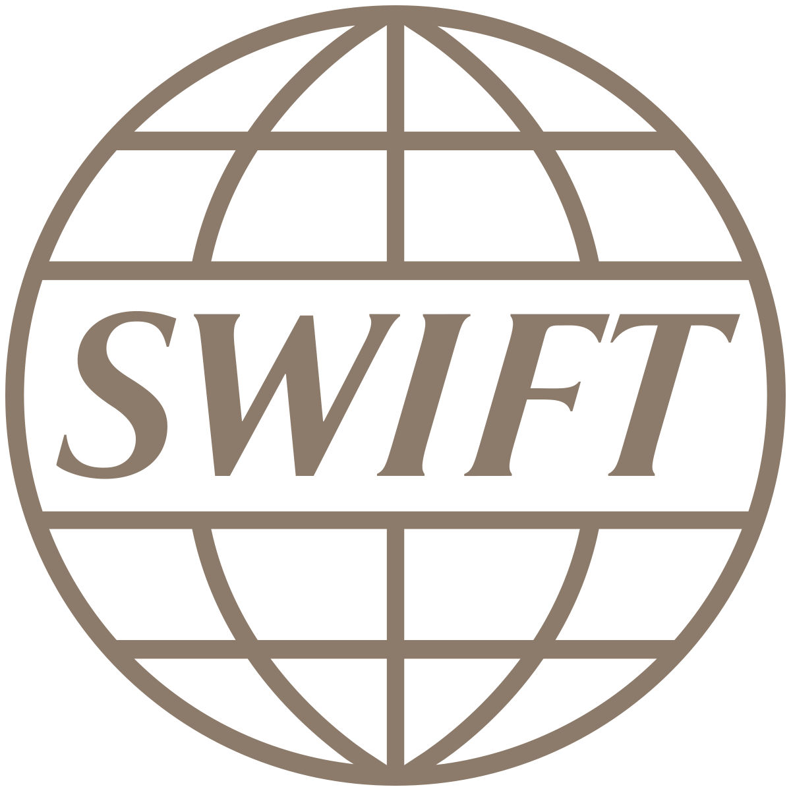

 SWIFT(Society for the Worldwide Interbank Financial Telecommunication)
Database Developer Intern
Project:Developed a REST API for filtering and updating Security Violation logs. The project included making an interface with html/css front end with a Node js, Express js, Mongo db backend along with a Python and sqlite3 processor.
Business Value added:The API filters out Security Violations from k thousand line files to 100 lines. Made a database to contain all updates and reports of security violations so that no data is lost. Original time of completion (x hours or days) is now minutes